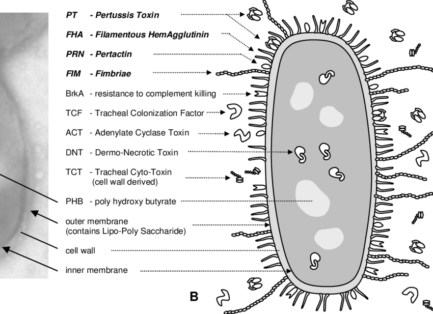

La tosferina es causada específicamente por la bacteria **_Bordetella pertussis_**. Esta bacteria tiene estructuras finas llamadas pili o fimbrias que le permiten adherirse firmemente a las células ciliadas que recubren las vías respiratorias, desde la nariz hasta los bronquios. Una vez establecida, la bacteria comienza a liberar diversas toxinas, siendo la más notable la **toxina pertussis**, que interfiere con la función normal de estas células y del sistema inmunitario local. Esta acción provoca la inflamación de las vías aéreas y la producción excesiva de mucosidad, lo que conduce a la característica tos intensa y prolongada.
La transmisión de _Bordetella pertussis_ es altamente eficiente y ocurre principalmente a través de la inhalación de pequeñas gotas respiratorias que se expulsan al aire cuando una persona infectada **tose, estornuda o incluso habla muy cerca** de otras personas. Estas gotitas pueden permanecer suspendidas en el aire por un tiempo breve o depositarse en superficies, aunque la transmisión directa por inhalación es la vía más común. La capacidad de la bacteria para sobrevivir fuera del cuerpo humano es limitada, por lo que el contacto cercano con una persona infectada es generalmente necesario para la transmisión. El período de mayor contagio se sitúa desde el inicio de los síntomas catarrales hasta aproximadamente tres semanas después del comienzo de la tos paroxística, si no se administra tratamiento antibiótico.
(Video que explica cómo la bacteria Bordetella pertussis infecta las vías respiratorias. Reemplaza 'video/infeccion_tosferina.mp4' y 'img/thumbnail_infeccion_tosferina.jpg' con tus archivos.)
Los efectos de la tosferina pueden ser severos, especialmente en lactantes y personas con sistemas inmunitarios comprometidos. La tos paroxística, aunque es el síntoma más distintivo, puede llevar a una serie de complicaciones debido al estrés físico que impone al cuerpo y a la propia acción de la bacteria:
(Video que ilustra las posibles complicaciones de la tosferina en bebés. Reemplaza 'video/complicaciones_tosferina_bebes.mp4' y 'img/thumbnail_complicaciones_bebes.jpg' con tus archivos.)